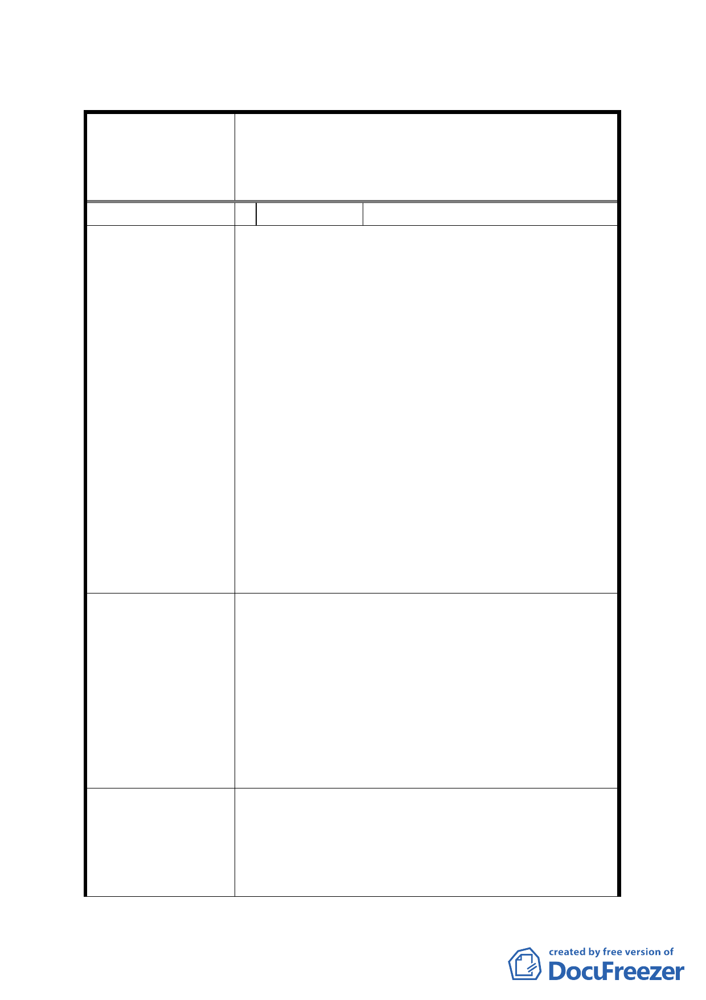

臺北市都市計畫委員會 公民或團體所提意見綜理表
案名
擬定臺北市內湖區蘆洲里附近工業區細部計畫暨變
更第 2 種工業區為科技工業區 B 區(特)、科技工業
區 B 區、道路用地、護坡用地及變更工業區(供輕工
業使用)為科技工業區 A 區(特)計畫案
編號
陳情理由
建議辦法
發展局回應意見
1 陳情人
豐鑫開發投資股份有限公司
本陳情位置依民國 97 年 3 月市府規劃草案屬「變
更臺北市內湖區蘆洲里附近部分工業區為保護區、
住宅區及道路用地主要計畫案」範圍內，考量整體
區域發展進度，本公司帶頭作為蘆洲里地區轉型開
發的先期計畫，並降低該案之重劃負擔增加以提高
其重劃可行性，遂於民國 97 年 10 月 09 日經提「徵
求參與『促進都市再生 2010 年臺北好好看』開發計
畫案」審查委員會審查通過推薦，並依都市計畫法
第 24 條辦理「變更臺北市內湖區潭美段 1 小段 405
地號等 6 筆土地第二種工業區為科技工業區 A 區
(特)及道路用地細部計畫案」，於民國 98 年 3 月 2
日依府都規字第 09736046100 號公告公開展覽，刻
正辦理後續之都市計畫委員會審議之法定程序。
然後續都市計畫、都市設計及環境影響評估審議
結果，倘若無法兼顧本公司參與市府市地重劃案之
基本權益或時程無法配合需要，恐影響整體蘆洲里
附近工業區之再發展。
1. 本公司建議本陳情位置納入「擬定臺北市內湖
區蘆洲里附近工業區細部計畫暨變更第 2 種工業
區為科技工業區 B 區(特)、科技工業區 B 區、道
路用地、護坡用地及變更工業區(供輕工業使用)
為科技工業區 A 區(特)計畫案」規劃範圍內，以
為陳情人權益。
2. 建請市府辦理該地區之市地重劃可行性評估
時，應考量本基地納入規範範圍(參與或不參與
市地重劃)之替代方案比較。
一、查本案業經都委會 98 年 12 月 25 日第 605 次
委員會議審議通過，並以 99 年 2 月 4 日府都
規字第 09900054900 號公告實施。
二、後續本案如未依好好看規範時程開發，本局再
予檢討將該基地納入重劃範圍。
- 26 -